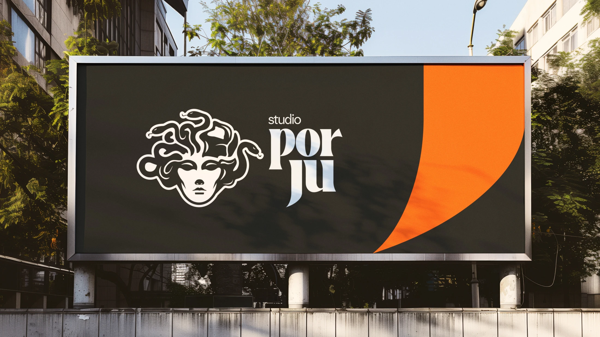

Por Ju
2024
Autenticidade como assinatura. Uma marca que conecta expressão pessoal, lifestyle e autoestima.
- Projeto
- Branding
- Cliente
- Por Ju
- Ano
- 2024
- Categorias
- Identidade Visual
- Atuação
- Conceito e identidade visual
Personalidade em primeiro plano
O branding do Studio Por Ju traduz uma personalidade despojada, autêntica e moderna. O projeto reúne símbolo, tipografia e cor em uma identidade que valoriza expressão individual e aproxima a comunicação do universo de lifestyle e autoestima.
Presença que se reconhece
A combinação entre uma assinatura tipográfica expressiva, o símbolo inspirado em Medusa e o contraste de preto, branco e laranja dá unidade às aplicações. A linguagem se estende a peças de comunicação, redes sociais e vestuário, criando um repertório visual próprio para a marca.